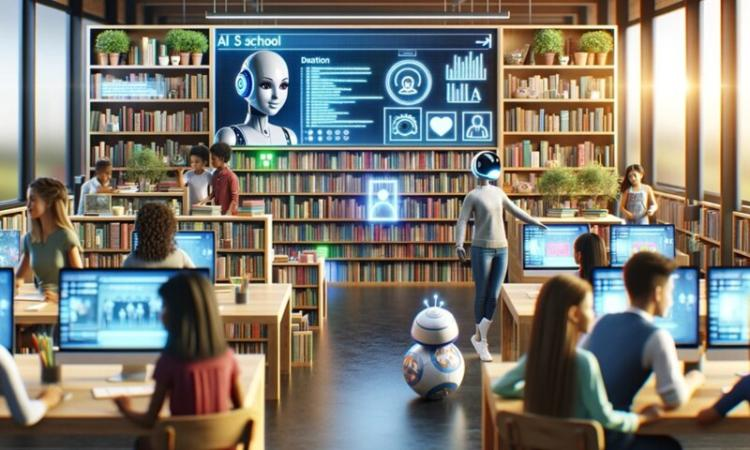
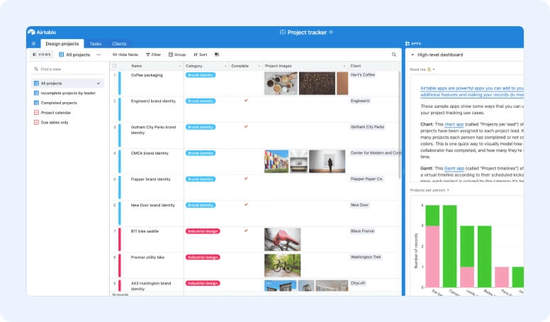

RESULTADOS DE INVESTIGACION

Sistema Inteligente de Gestión de Bibliotecas
Se diseñó e implementó un sistema que permite gestionar el inventario y el préstamo de libros de manera digital, reduciendo errores y mejorando la eficiencia en la administración bibliotecaria.
Resultados Obtenidos
- Desarrollo de una aplicación web funcional
- Automatización del proceso de préstamo de libros
- Organización digital del inventario
Chatbot Educativo
Se desarrolló un chatbot capaz de brindar apoyo académico básico, facilitando la comunicación y el acceso a información para los estudiantes.
Resultados Obtenidos
- Creación de un chatbot interactivo
- Mejora en la atención a estudiantes
- Respuestas automatizadas a preguntas frecuentes
Plataforma de Análisis Académico
Se creó una plataforma que analiza datos académicos para generar reportes visuales, permitiendo identificar fortalezas y debilidades en el rendimiento de los estudiantes.
Resultados Obtenidos
- Implementación de dashboards de visualización de datos
- Identificación de patrones en el rendimiento estudiantil
- Apoyo en la toma de decisiones académicas

App de Seguimiento de Proyectos Estudiantiles
Se diseñó una aplicación que permite a los estudiantes registrar y hacer seguimiento de sus proyectos, facilitando la planificación y control de actividades.
Resultados Obtenidos
- Desarrollo de una aplicación móvil
- Organización de tareas y avances
- Mejora en la gestión de proyectos
Sistema Básico de Seguridad Informática
Se desarrolló un sistema orientado a mejorar la seguridad de la información, aplicando controles de acceso y evaluando posibles riesgos en entornos digitales.
Resultados Obtenidos
- Implementación de mecanismos de autenticación
- Identificación de vulnerabilidades básicas
- Propuesta de buenas prácticas de seguridad